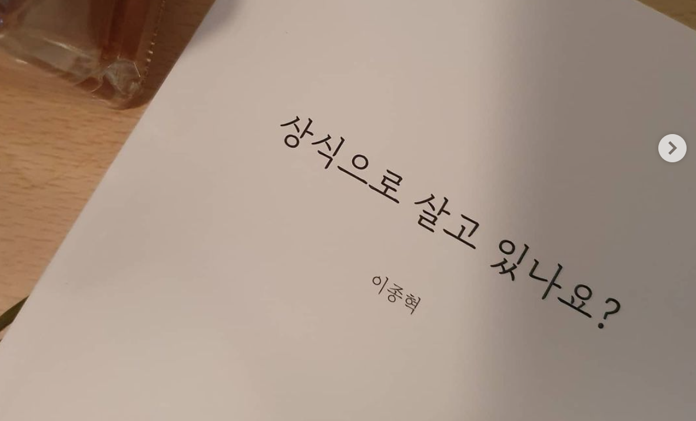
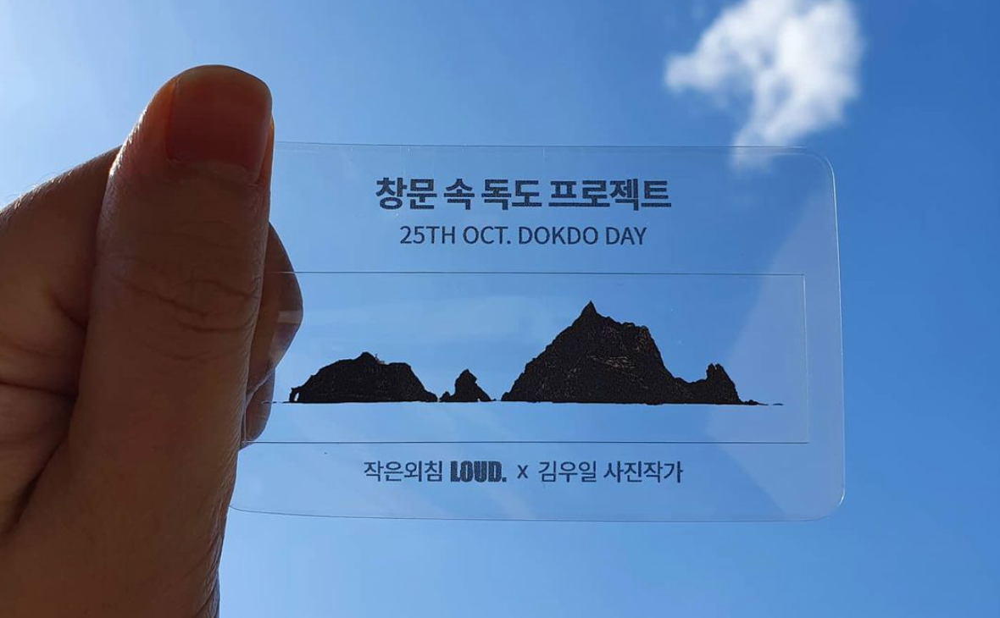
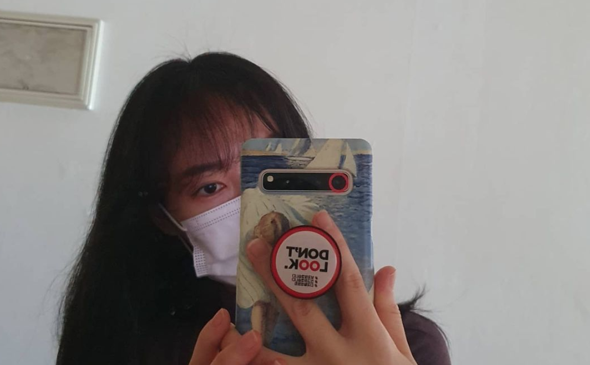

-

늦은 책 리뷰 상식으로 살고 있나요? 받자마자 다 읽었지만
책 속 물음표에 선뜻 대답할 수 없어 늦어진 책 리뷰 어쩌면 이 과정도 답이 될
것 같아 짧게나마 글을 올려본다.
유진🧸
82K views
-

#창문속독도프로젝트 10월 25일이 독도의날이라고 합니다!
일상의 한켠에서 독도를 만날 수 있는 창문 속 독도 프로젝트는 공공소통연구소
수석연구원, 이지훈 프로님의 아이디어에서 시작됐다고 합니다:)
유진🧸
82K views
-

⭕️빨간원 프로젝트⭕️ 는 디지털 성범죄의 심각성을 알리고 사회적
경각심을 제고하기 위해 공공소통연구소가 제안하고 경기남부경찰청이 중심이 되어
시작한 캠페인입니다.
유진🧸
82K views